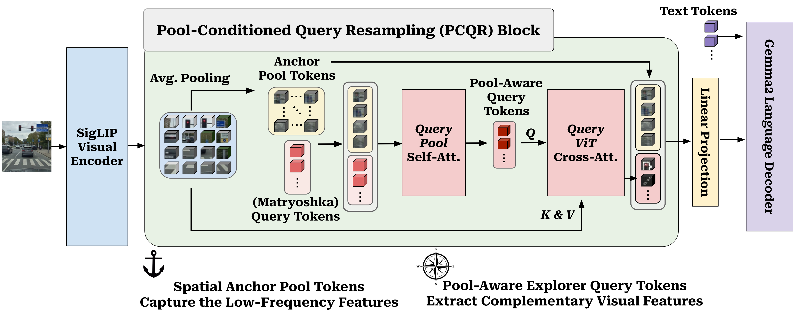
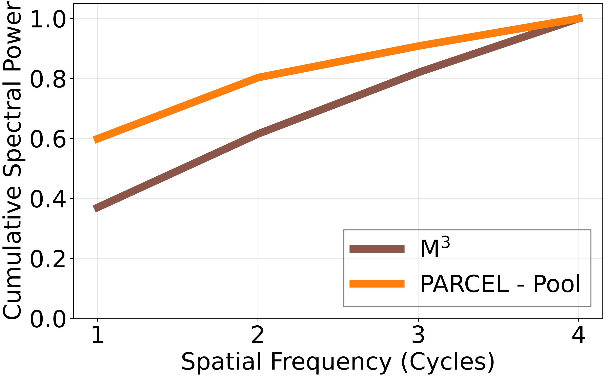
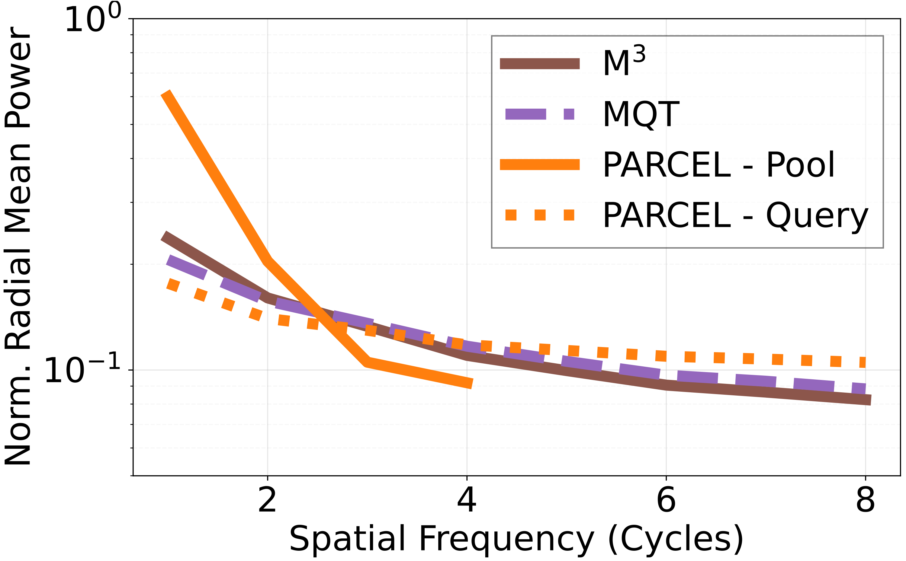
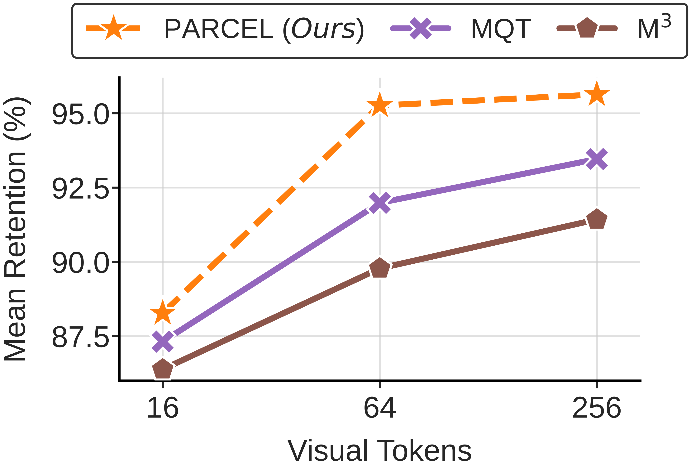

Observation
Existing elastic LVLM compression methods fail in opposite ways under aggressive budgets. Spatial-only pooling blurs detail through aliasing, while query-only resampling weakens spatial relationships.
arXiv 2026
1Google, 2Max Planck Institute for Informatics, SIC, 3Technical University of Munich
Abstract
Large Vision-Language Models (LVLMs) map visual inputs into dense token sequences, imposing a quadratic computational bottleneck for inference. Elastic visual-token compression addresses this by training a single model that can run at multiple visual-token budgets. However, existing approaches struggle under aggressive compression. Spatial-only compression induces spectral aliasing that obscures fine-grained detail, while query-only compression sacrifices explicit grid-aligned spatial structure. PARCEL resolves this conflict by establishing pooled spatial tokens as low-frequency layout anchors and conditioning elastic query tokens on these anchors through Pool-Conditioned Query Resampling. Across 27 benchmarks, PARCEL improves the performance-efficiency Pareto frontier over prior elastic baselines while preserving the “train once, deploy anywhere” paradigm.
Overview
Existing elastic LVLM compression methods typically fail by overcommitting to one of these roles. PARCEL explicitly splits them across pooled anchors and conditioned query tokens.
Existing elastic LVLM compression methods fail in opposite ways under aggressive budgets. Spatial-only pooling blurs detail through aliasing, while query-only resampling weakens spatial relationships.
PARCEL divides the work explicitly: pooled 2D anchors preserve low-frequency layout, and pool-aware query tokens recover complementary visual detail from the full feature grid.
Across 27 benchmarks, PARCEL shifts the Pareto frontier, outperforming M3 and MQT at matched budgets while retaining the practical “train once, deploy anywhere” story.
Method
The pooled anchors preserve the low-frequency layout, so the explorer query tokens can spend their capacity on complementary visual detail.

Budget-aware pooling creates deterministic spatial anchors that preserve low-frequency geometry and explicit layout.
Query tokens first attend to the anchors, so they no longer need to infer coarse layout from scratch.
The conditioned queries cross-attend to the full ViT features to recover complementary details that the pooled grid drops.
PARCEL dynamically scales anchor size and query count so the model stays effective across both severe and generous budgets.

Budget-Aware Routing
PARCEL uses the piecewise routing rule described in the paper: low budgets keep a 4x4 anchor grid, while medium-to-high budgets switch to an 8x8 anchor grid and allocate the remainder to conditioned queries.

PARCEL keeps a fixed 4x4 spatial anchor grid, yielding 16 pooled anchor tokens. Any remaining budget in this interval is assigned to conditioned queries.
At the 64-token boundary, the model upgrades the spatial base to an 8x8 spatial anchor grid. The full budget is used to establish structure, so the query pathway is still inactive at this exact operating point.
Once the 64-token anchor base is secured, all additional tokens in this interval become pool-conditioned query tokens, which recover complementary high-frequency detail beyond the pooled grid.
Spectral Analysis
The architecture is not only intuitive at the design level; its anchor-query decomposition is also reflected in measurable spectral behavior on ChartQA samples.


These visualizations are drawn from ChartQA samples, and the same separation is reflected in downstream performance gains of +4.7 points at 64 tokens and +3.4 points at 256 tokens over M3.
Results
Across 27 benchmarks, PARCEL improves the aggregate retention-efficiency trade-off while remaining compatible with the train-once, deploy-anywhere elastic inference setup.

Across the RefCOCO suite, PARCEL improves over both MQT and M3 baselines, with gains reaching up to +8.9 points over M3.
PARCEL reaches 98.0%, 97.9%, and 95.0% retention on the video aggregate, compared to second-best baseline retentions of 94.4%, 93.5%, and 94.0%.
On the top-3 resolution-sensitive tasks, including ChartQA and DocVQA, PARCEL reaches 90.8%, 90.0%, and 77.1% retention across 256, 64, and 16 tokens, while the second-best baseline reaches 90.0%, 86.2%, and 75.5%.
PARCEL improves over the second-best baseline by +1.6, +2.9, and +1.3 points at 256, 64, and 16 tokens.
PARCEL improves over the second-best baseline by +0.9, +1.5, and +0.2 points at 256, 64, and 16 tokens.
PARCEL improves over the second-best baseline by +1.8, +4.4, and +1.0 points at 256, 64, and 16 tokens.
BibTeX
If you find PARCEL useful for your work, please cite our work below.
@article{kuzucu2026parcel,
title = {PARCEL: Pool-Anchored Resampling with Conditioned Elastic Queries for Efficient Vision-Language Understanding},
author = {Kuzucu, Selim and Tonioni, Alessio and Lup, Vasile and Schiele, Bernt and Tombari, Federico and Naeem, Muhammad Ferjad},
journal = {arXiv preprint arXiv:2605.30126},
year = {2026}
}